SC-34 · smartclearance.com · the hero
The hero's tour, slower, with a card for each agent
The maintainer's words, 5 Oct 2026:
on the hero, small changes need, When I focus out of the hero, it should return back to original size so that I can see the full picture. Also the playing time is too fast it should a bit slower during the play these. popups should auto appear one by one when the related nodes are focussed
What every option shares
- Leaving the hero brings the whole town back: the pointer leaving it, focus moving out, a tap outside, or scrolling it away. A card the visitor opened closes.
- The tour runs longer than five seconds, so it carries Pause and Play in Replay's place (WCAG 2.2.2); the caption's steps stop it too.
- Taking the camera (a drag, a zoom, a card opened) holds the tour; Play hands it back. Out of view it holds, and carries on when it is back.
- Under reduced motion the result is there at once.
The hero as it was
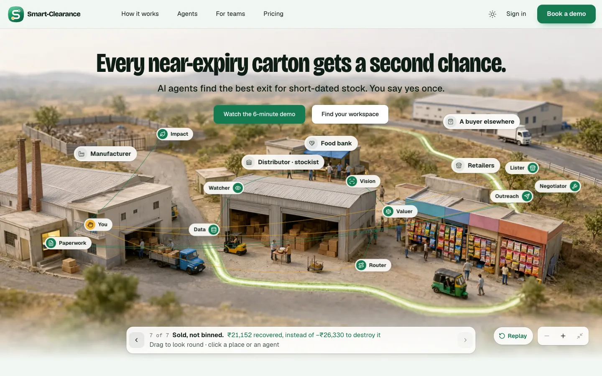
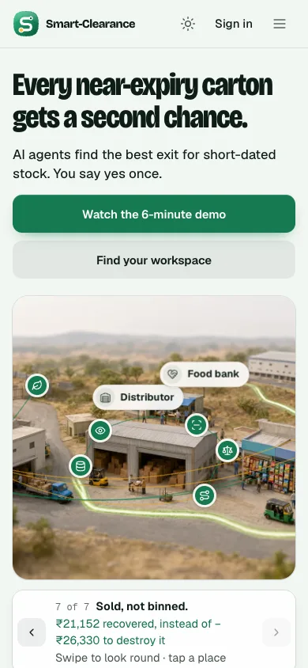
Three options, each at the Router's stop
A · Beat by beat
Open the mockup · in darkThe camera keeps the seven beats' shots. In each beat its agents' cards open one after another, docked where a visitor's card opens (bottom left); on phones a compact card over the foot of the town.
1.4 s an agent, 1.9 s the yes, 1.2 s a beat without agents: about 18 s.
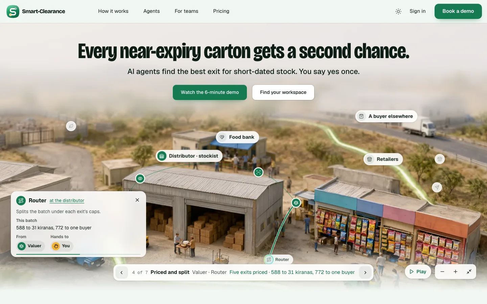
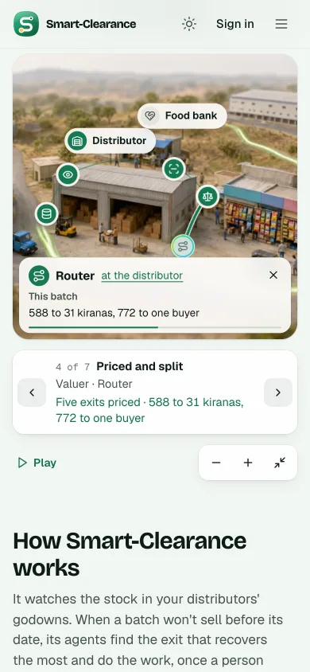
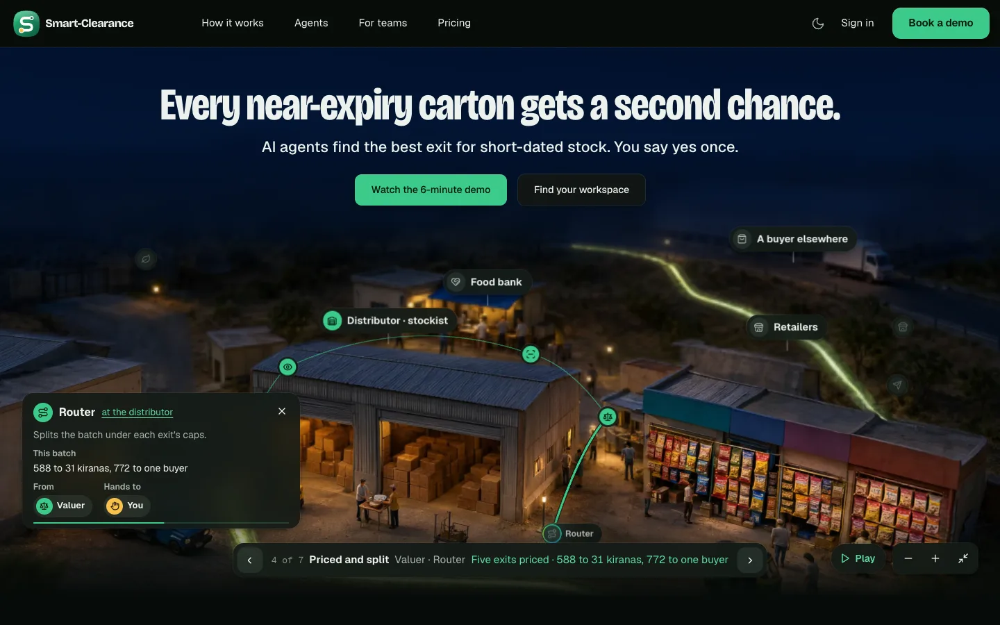
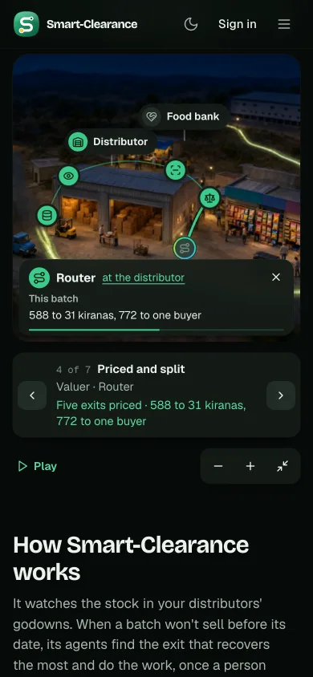
B · Agent by agent
Open the mockup · in darkThe camera flies close to each agent in turn as its card opens, docked as in A. The most cinematic, and the longest.
1.8 s an agent, 2.3 s the yes, 1.4 s a beat without agents: about 23 s.
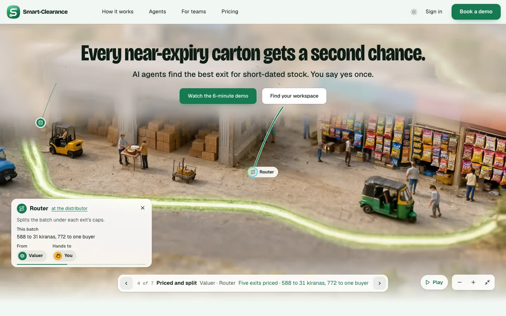
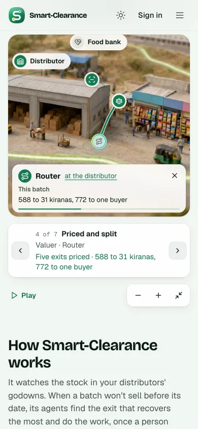
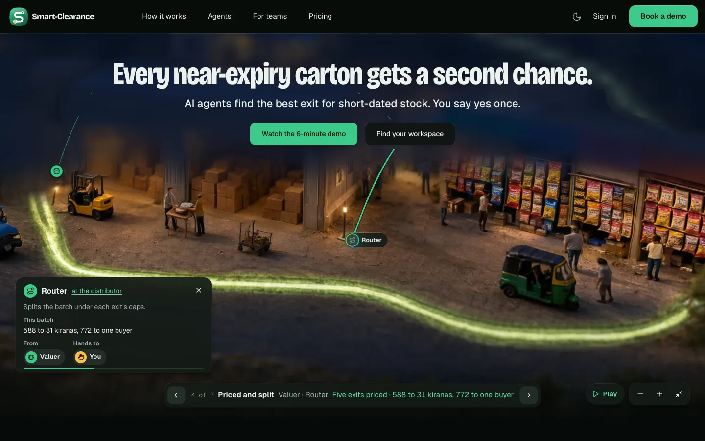
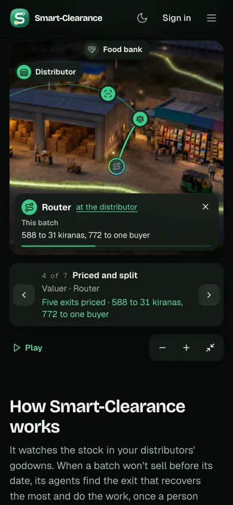
C · The whole picture
PickedOpen the mockup · in darkThe camera stays on the whole town. A small card opens beside each agent's pin as it works: its name, its post, what it did for this batch.
1.3 s an agent, 1.7 s the yes, 1.1 s a beat without agents: about 17 s.
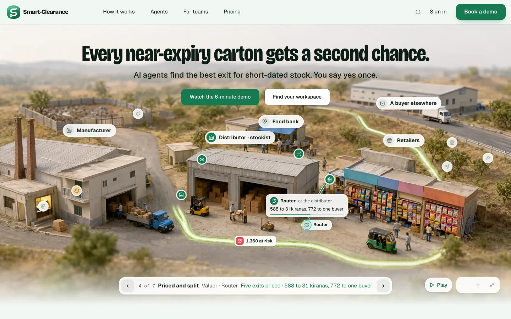
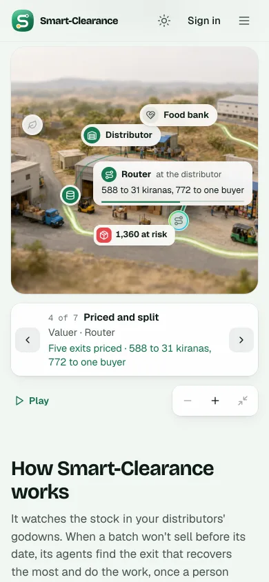
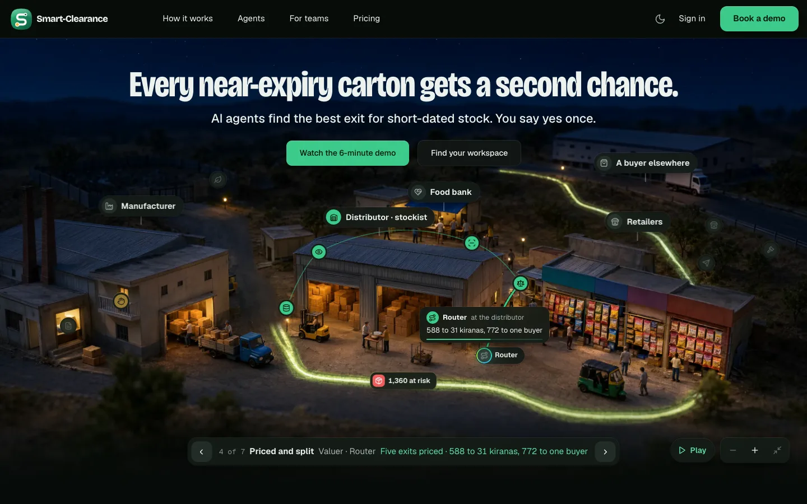
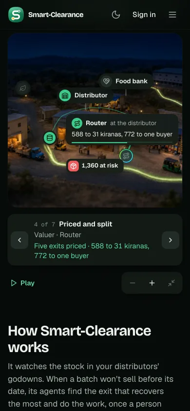
The pick
Option C, the whole picture: "lets go for option C" (5 Oct 2026), given in the same request after the options were described. The build adds a stem from the card to its pin, lets the pin's own name stand down while the card names the agent, and on phones and tablets, where the stage crops the town's sides, slides the camera along at the same size to keep the agent at work in view.
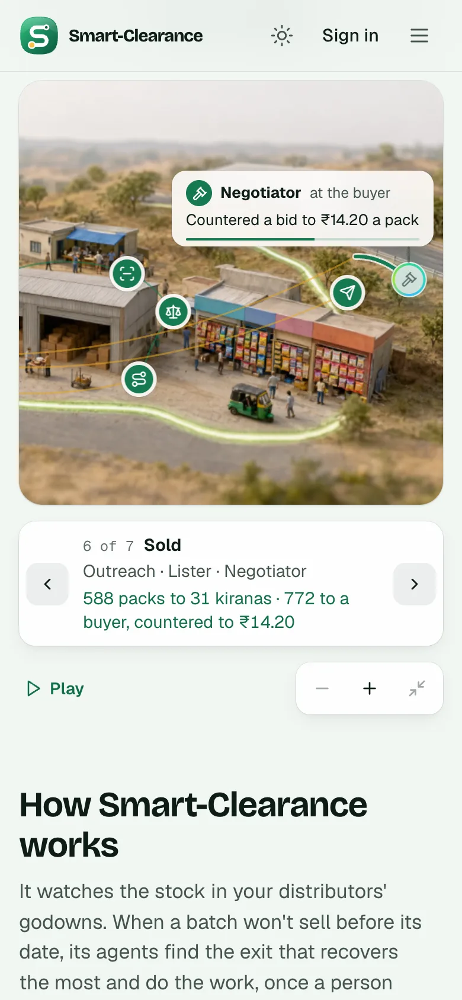
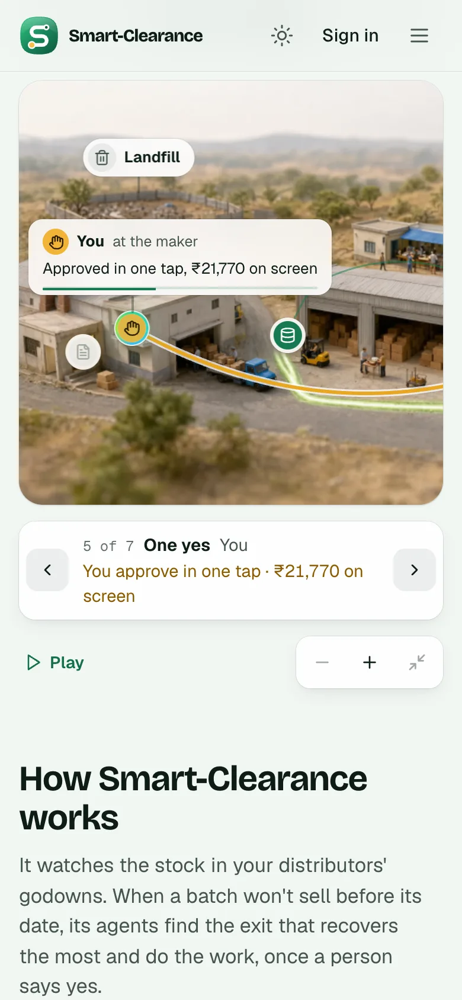
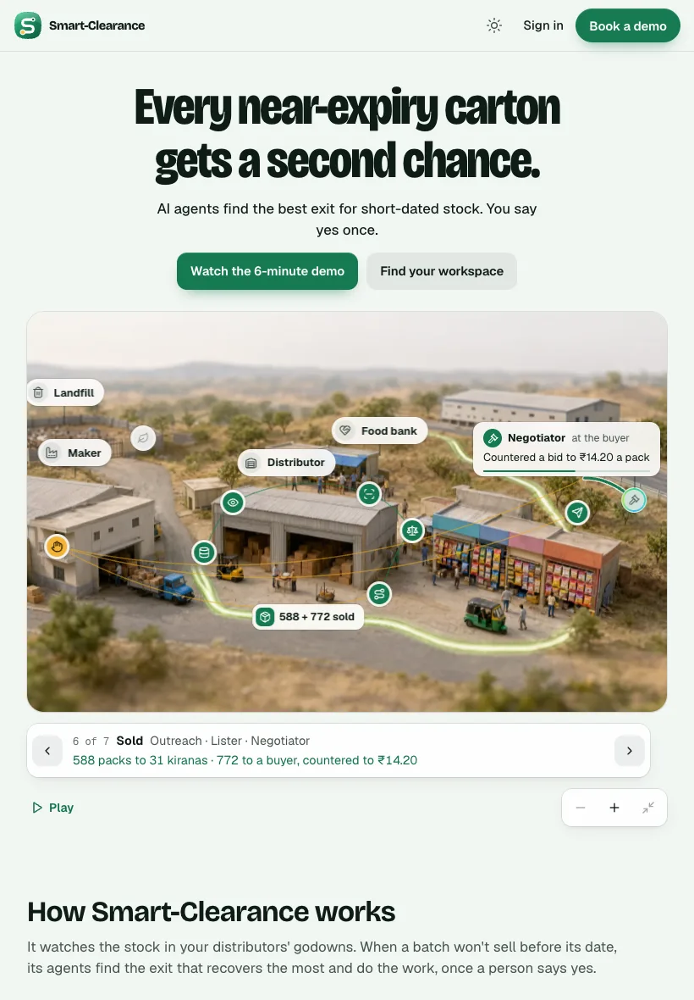
The decision record: decision.md.